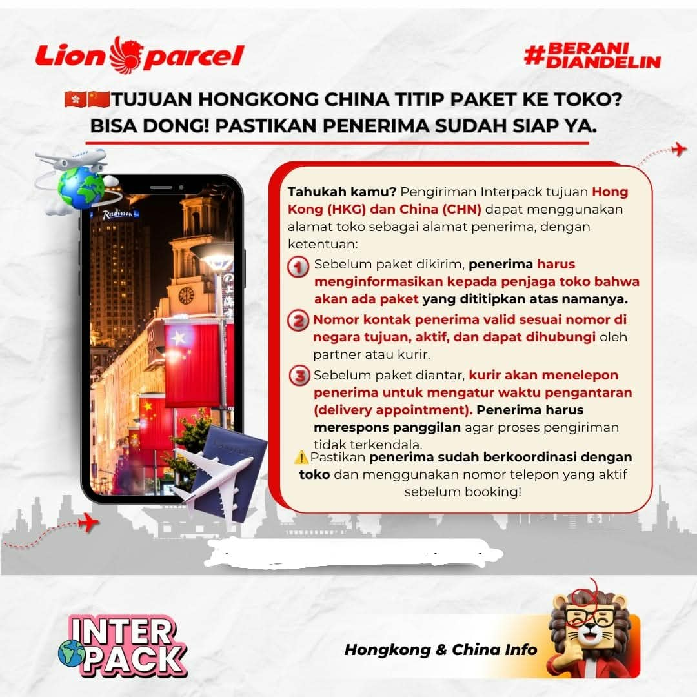

Cara Kirim Paket Interpack ke Hong Kong & China dengan Alamat Toko

Ingin mengirim paket ke keluarga, teman, kerabat, atau rekan bisnis yang berada di luar negeri? Tidak semua penerima paket memiliki alamat rumah atau tempat tinggal sendiri. Ada juga yang menggunakan alamat toko, tempat kerja, atau lokasi usaha sebagai alamat penerimaan barang.
Kabar baiknya, pengiriman internasional menggunakan layanan Interpack Lion Parcel untuk tujuan Hong Kong (HKG) dan China (CHN) dapat menggunakan alamat toko sebagai alamat penerima, sesuai ketentuan layanan dan hasil konfirmasi pengiriman.
Artinya, pengirim tidak selalu harus menggunakan alamat rumah penerima. Namun, ada beberapa hal yang perlu diperhatikan agar paket tidak mengalami kendala ketika tiba di negara tujuan.
Bagi kamu yang berada di Bandung, Rancaekek, Cicalengka, dan sekitarnya, berikut panduan pengiriman Interpack dengan sistem titip paket ke toko melalui Lion Parcel Bandung POS101.
Konsultasi Pengiriman Interpack
Mau mengirim paket ke Hong Kong atau China? Silakan konsultasikan tujuan, jenis barang, dan alamat penerima terlebih dahulu kepada admin kami.
💬 Chat WhatsApp 0851-8309-0486Apakah Paket Interpack ke Hong Kong dan China Bisa Dititipkan ke Toko?
Salah satu pertanyaan yang sering muncul sebelum melakukan pengiriman internasional adalah apakah paket bisa dikirim menggunakan alamat toko milik kerabat atau kenalan di negara tujuan.
Untuk pengiriman Interpack tujuan Hong Kong dan China, penggunaan alamat toko dapat dilakukan berdasarkan ketentuan yang berlaku. Hal terpenting adalah memastikan bahwa pihak toko mengetahui adanya paket yang akan dikirimkan dan bersedia menerima barang tersebut.
Jangan sampai paket sudah dikirim dari Indonesia, tetapi pemilik toko atau penjaga toko di negara tujuan justru tidak mengetahui adanya kiriman. Kondisi seperti ini dapat menyulitkan proses pengantaran maupun penerimaan barang.
Oleh karena itu, sebelum melakukan pengiriman, pastikan penerima sudah melakukan koordinasi dengan pihak toko.
Ketentuan Penting Kirim Paket Interpack dengan Sistem Titip ke Toko
Agar proses pengiriman berjalan lebih lancar, berikut beberapa hal yang perlu dipersiapkan oleh pengirim dan penerima.
1. Pastikan Pemilik atau Penjaga Toko Sudah Mengetahui
Sebelum paket diberangkatkan dari Indonesia, penerima harus menghubungi pemilik atau penjaga toko terlebih dahulu.
Sampaikan bahwa akan ada paket internasional yang dikirim menggunakan alamat toko tersebut. Pastikan pihak toko bersedia menerima dan menyimpan paket ketika kurir datang mengantarkan barang.
Jika toko memiliki beberapa cabang, pastikan alamat yang diberikan benar-benar merupakan lokasi toko yang akan menerima paket.
2. Gunakan Nomor Telepon Penerima yang Aktif
Nomor telepon merupakan salah satu informasi penting dalam pengiriman internasional. Pastikan nomor yang dicantumkan merupakan nomor yang benar-benar aktif dan dapat dihubungi di negara tujuan.
Perhatikan kode negara pada nomor telepon:
- Hong Kong: kode telepon internasional +852.
- China: kode telepon internasional +86.
Sebaiknya gunakan nomor penerima atau kontak penanggung jawab toko yang memang dapat membantu proses penerimaan paket.
3. Penerima Harus Siap Merespons Panggilan Kurir
Dalam proses pengantaran internasional, mitra kurir di negara tujuan mungkin perlu menghubungi penerima untuk memastikan alamat, mengatur waktu pengiriman, atau mengonfirmasi proses penyerahan barang.
Karena itu, penerima perlu memastikan teleponnya aktif dan dapat menerima panggilan maupun pesan dari nomor yang tidak dikenal.
Jika penerima tidak dapat dihubungi, proses pengantaran berpotensi mengalami keterlambatan atau membutuhkan pengaturan ulang sesuai prosedur mitra pengiriman.
4. Pastikan Alamat Toko Ditulis dengan Lengkap
Jangan hanya menuliskan nama toko sebagai alamat tujuan. Informasi alamat harus cukup jelas agar kurir dapat menemukan lokasi penerima.
Usahakan informasi berikut tersedia:
- Nama toko atau tempat usaha.
- Nama penerima atau penanggung jawab.
- Nama jalan dan nomor bangunan.
- Nomor unit, lantai, atau blok jika ada.
- Distrik atau wilayah administrasi.
- Kota dan wilayah tujuan.
- Kode pos jika berlaku atau tersedia.
- Nomor telepon yang aktif.
Untuk alamat di China, meminta penerima mengirimkan alamat asli dalam karakter Mandarin beserta versi bahasa Inggris atau pinyin jika tersedia dapat membantu mengurangi kesalahan penulisan alamat.
Catatan penting:
Pastikan alamat yang digunakan memang disetujui oleh pemilik toko. Jangan menggunakan alamat toko orang lain tanpa izin atau tanpa memastikan adanya pihak yang bertanggung jawab menerima paket.
Bagaimana Cara Mengirim Paket Interpack ke Hong Kong dan China?
Bagi pengirim yang baru pertama kali menggunakan layanan pengiriman internasional, prosesnya mungkin terasa cukup rumit. Namun, dengan mempersiapkan informasi yang benar sejak awal, proses konsultasi dan pengiriman bisa menjadi lebih mudah.
Langkah 1: Siapkan Informasi Barang
Sebelum datang ke agen, siapkan informasi mengenai barang yang ingin dikirim. Jelaskan jenis barang, jumlah, perkiraan berat, serta nilai barang secara jujur.
Informasi tersebut diperlukan untuk membantu pemeriksaan kelayakan pengiriman dan proses administrasi internasional.
Langkah 2: Siapkan Data Penerima di Negara Tujuan
Mintalah penerima mengirimkan informasi alamat toko secara lengkap. Pastikan nama penerima, nomor telepon, dan alamat sesuai dengan informasi yang sudah disepakati bersama pihak toko.
Langkah 3: Konsultasikan Jenis Barang dan Tujuan Pengiriman
Datang ke Lion Parcel Bandung POS101 atau hubungi admin terlebih dahulu untuk melakukan konsultasi mengenai layanan Interpack.
Petugas dapat membantu memeriksa informasi tujuan, jenis barang, estimasi tarif, serta persyaratan yang berlaku sebelum pengiriman diproses.
Langkah 4: Pemeriksaan dan Persiapan Paket
Barang akan melalui pemeriksaan sesuai ketentuan pengiriman. Pastikan isi paket sesuai dengan deklarasi barang dan tidak termasuk kategori barang yang dilarang atau dibatasi.
Gunakan kemasan yang kuat dan sesuai karakteristik barang agar paket terlindungi selama perjalanan.
Langkah 5: Proses Pengiriman dan Pemantauan
Setelah proses administrasi dan penerimaan paket selesai, pengiriman dapat diproses sesuai prosedur layanan.
Simpan nomor resi atau bukti transaksi. Gunakan informasi pelacakan yang tersedia untuk memantau perkembangan pengiriman.
Tips Mempersiapkan Paket Sebelum Dikirim ke Luar Negeri
Pengiriman internasional membutuhkan perhatian lebih dibandingkan pengiriman dalam negeri. Paket akan melewati proses perjalanan lintas negara dan dapat menjalani pemeriksaan kepabeanan.
Berikut beberapa tips yang sebaiknya diperhatikan:
- Gunakan kardus yang kuat. Pilih kemasan yang sesuai dengan ukuran dan berat barang.
- Lindungi barang di dalam paket. Gunakan pelindung tambahan seperti bubble wrap atau bahan pengaman lain sesuai kebutuhan.
- Jangan menyembunyikan isi paket. Informasikan jenis barang secara jujur saat proses administrasi.
- Pastikan alamat mudah dibaca. Periksa kembali nama toko, alamat, nomor telepon, dan informasi penerima.
- Konfirmasi kesediaan penerima. Pastikan pihak toko sudah mengetahui jadwal atau perkiraan kedatangan paket.
- Periksa ketentuan barang kiriman. Barang tertentu mungkin dilarang, dibatasi, atau membutuhkan dokumen tambahan di negara tujuan.
Barang Apa Saja yang Bisa Dikirim ke Hong Kong dan China?
Tidak semua jenis barang dapat dikirim menggunakan layanan internasional. Setiap negara memiliki ketentuan impor, pemeriksaan kepabeanan, dan pembatasan barang yang berbeda.
Karena itu, jangan langsung berasumsi bahwa barang yang dapat dikirim ke satu negara otomatis dapat dikirim ke negara lainnya.
Sebelum melakukan pengiriman, informasikan jenis barang secara detail kepada petugas agar dapat dilakukan pemeriksaan berdasarkan ketentuan layanan dan negara tujuan.
Perhatian khusus diperlukan untuk barang seperti:
- Makanan dan produk olahan.
- Kosmetik dan produk perawatan tubuh.
- Cairan, parfum, dan produk berbahan kimia.
- Baterai dan perangkat elektronik.
- Obat-obatan dan produk kesehatan.
- Barang bernilai tinggi atau barang yang membutuhkan dokumen khusus.
Daftar tersebut bukan berarti semua barang di atas pasti dilarang. Penerimaan bergantung pada jenis produk, komposisi, kemasan, dokumen, aturan negara tujuan, serta kebijakan layanan pengiriman.
Perlu diperhatikan:
Jangan melakukan pengiriman barang yang belum dipastikan kelayakannya. Konsultasikan terlebih dahulu kepada agen Lion Parcel sebelum membawa barang untuk diproses.
Keuntungan Konsultasi Pengiriman Internasional di Lion Parcel POS101 Rancaekek
Bagi masyarakat yang tinggal di wilayah Bandung Timur, Rancaekek, Cicalengka, dan sekitarnya, mencari informasi pengiriman internasional tidak harus selalu dilakukan dengan datang ke pusat kota.
Lion Parcel Bandung POS101 Nanjungmekar hadir untuk membantu pelanggan mendapatkan informasi mengenai pengiriman paket, termasuk layanan Interpack untuk tujuan internasional.
Beberapa hal yang dapat dikonsultasikan antara lain:
- Informasi tujuan pengiriman internasional.
- Pengecekan jenis barang yang dapat dikirim.
- Informasi estimasi tarif berdasarkan berat dan tujuan.
- Persiapan alamat dan data penerima.
- Informasi persyaratan administrasi pengiriman.
- Konsultasi pengiriman untuk kebutuhan pribadi maupun usaha.
Dengan mempersiapkan data sejak awal, pelanggan dapat mengurangi risiko kesalahan informasi saat proses pengiriman.
Ingin Kirim Paket ke Luar Negeri?
Konsultasikan pengiriman Interpack tujuan Hong Kong, China, Taiwan, dan negara lainnya kepada Lion Parcel Bandung POS101.
💬 Konsultasi Sekarang📍 Lokasi Lion Parcel Bandung POS101 Nanjungmekar
Jl. Raya Barat Cicalengka RT 1 RW 1, Nanjung Mekar, Rancaekek, Kabupaten Bandung, Jawa Barat.
Pertanyaan yang Sering Diajukan tentang Pengiriman Interpack
1. Apakah paket Interpack ke Hong Kong bisa menggunakan alamat toko?
Bisa berdasarkan ketentuan layanan yang berlaku. Pastikan toko mengetahui adanya paket yang akan diterima dan alamat serta nomor telepon penerima sudah benar.
2. Apakah pengiriman Interpack ke China bisa dititipkan ke toko?
Penggunaan alamat toko dapat dilakukan sesuai ketentuan pengiriman. Sebelum melakukan booking, pastikan alamat dan kontak penanggung jawab toko sudah dikonfirmasi.
3. Apakah nomor telepon penerima di luar negeri wajib aktif?
Sangat penting. Nomor telepon yang aktif membantu proses komunikasi antara penerima dan mitra kurir di negara tujuan apabila diperlukan konfirmasi pengantaran.
4. Apakah paket bisa diterima oleh penjaga toko?
Hal tersebut bergantung pada kesediaan pihak toko dan prosedur penyerahan paket dari mitra kurir. Karena itu, pastikan pemilik atau penjaga toko sudah memberikan persetujuan sebelumnya.
5. Bagaimana cara mengetahui tarif Interpack ke Hong Kong dan China?
Tarif dapat dikonsultasikan melalui agen Lion Parcel dengan memberikan informasi negara tujuan, jenis barang, dan perkiraan berat paket.
6. Apakah semua barang bisa dikirim menggunakan Interpack?
Tidak. Setiap barang harus memenuhi ketentuan layanan, peraturan kepabeanan, dan ketentuan impor negara tujuan. Konsultasikan terlebih dahulu sebelum melakukan pengiriman.
7. Di mana bisa konsultasi pengiriman Interpack di wilayah Rancaekek?
Kamu bisa menghubungi Lion Parcel Bandung POS101 Nanjungmekar Rancaekek melalui WhatsApp 0851-8309-0486 atau datang langsung ke lokasi agen.
Kesimpulan
Mengirim paket Interpack ke Hong Kong dan China menggunakan alamat toko merupakan salah satu pilihan bagi pengirim yang penerimanya tidak menggunakan alamat rumah pribadi.
Namun, keberhasilan proses penerimaan paket sangat bergantung pada kelengkapan alamat, nomor telepon yang aktif, kesediaan pemilik toko, dan koordinasi dengan penerima di negara tujuan.
Sebelum mengirim barang, pastikan seluruh informasi sudah benar dan jenis barang memenuhi ketentuan pengiriman internasional.
Bagi kamu yang berada di Bandung, Rancaekek, Cicalengka, dan sekitarnya, Lion Parcel Bandung POS101 siap membantu memberikan informasi serta konsultasi pengiriman paket internasional melalui layanan Interpack.
Nama Agen: Lion Parcel Bandung POS101 Nanjungmekar Rancaekek
Jam Operasional: Senin–Minggu, 08.00–20.00 WIB
Alamat: Jl. Raya Barat Cicalengka RT 1 RW 1, Nanjung Mekar, Rancaekek, Kabupaten Bandung, Jawa Barat.
WhatsApp: 0851-8309-0486
Website: Lion Parcel Bandung POS101